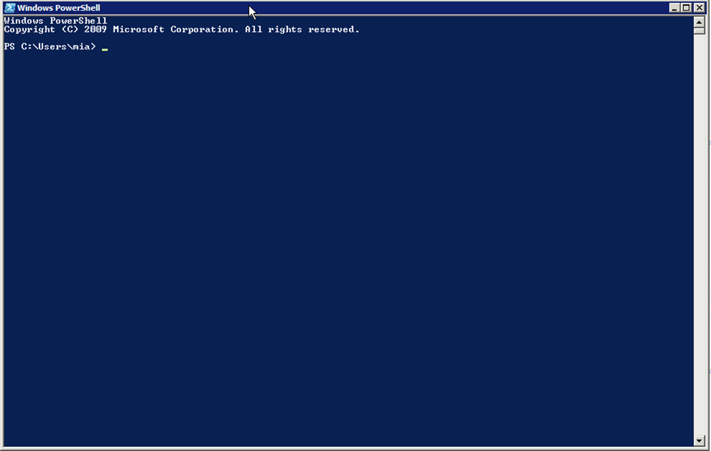
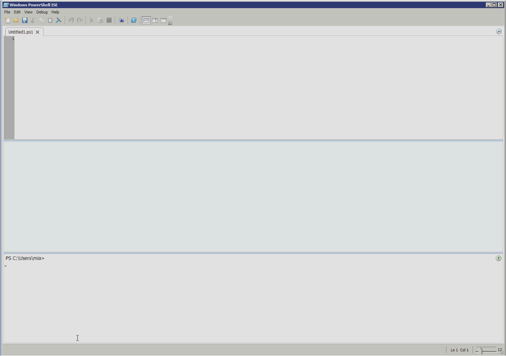

Обзор технологии Microsoft Windows PowerShellMicrosoft
Windows PowerShell является современной, стандартизированной оболочкой командной строки, которая предлагает администраторам большую гибкость и выбор того, как они управляют своими компьютерами и продуктами на базе Windows. Windows PowerShell не является прямой заменой старых технологий, таких как Microsoft Visual Basic ® Script Edition (VBScript), хотя оболочка имеет возможности сценариев, и обеспечивает такой же функциональный набор, как VBScript и много чего еще. Windows PowerShell была создана в результате вдохновения лучшими административными инструментами и процессами из операционной системы Windows и других операционных систем. Она предлагает уникальную, ориентированную на Windows модель администрирования.
Возможно впервые, Windows PowerShell предлагает действительно ориентированные на администратора средства автоматизации для повторяющихся или трудоемких административных задач, без необходимости более сложных программ или сценариев системы, которые требовались старыми технологиями.
Windows PowerShell - это не просто новый скриптовый язык. На самом деле это совершенно новый способ управления Windows и продуктами на базе Windows, и новый способ для Microsoft подумать об администраторах и том, как они работают. Многие из вещей, которые вы можете сделать в Windows PowerShell, сразу же покажутся знакомыми, например, возможность просматривать содержимое каталогов на диске. Тем не менее, Windows PowerShell, по сути, является чем-то совершенно другим. Для того, чтобы успешно работать с Windows PowerShell, необходимо иметь базовое понимание оперативной стратегии оболочки, ее технологической базы, и ее дизайна.
Windows PowerShell – это не язык скриптов или, по крайней мере, это не только язык скриптов. Windows PowerShell – это целый механизм, созданный для того, чтобы выполнять команды, которые решают административные задачи, такие как создание нового пользовательского аккаунта, конфигурация сервисов, удаление почтовых ящиков, и так далее. В действительности оболочка Windows PowerShell дает массу способов сообщить системе о том, какие команды необходимо выполнить. Например, можно вручную напечатать команду в командной строке.

Командная строка PowerShell
Также вы можете печатать команды в графической консоли ISE (integrated scripting environment), которая обладает более содержательным графическим интерфейсом командной строки.

Windows PowerShell ISE
Если вы являетесь разработчиком программного обеспечения, вы можете встроить Windows PowerShell в свою собственную программу и запрограммировать ее на выполнение определенных команд в ответ на действия пользователя, например, кликание по кнопке или иконке. Можно набрать серию команд в текстовом редакторе и дать оболочке инструкцию выполнять команды из этого файла. В идеале Windows PowerShell должен являться единым, централизованным источником всей административной деятельности. Также в идеале вы должны использовать графический пользовательский интерфейс (GUI) с кнопками, иконками, диалоговыми окнами и прочими элементами, которые выполняют команды Windows PowerShell в фоновом режиме. В данном случае, если бы GUI не позволил вам выполнить ту или иную задачу именно тем способом, которым вы хотите, вы могли бы дать команду на выполнение той же самой задачи нужным вам способом непосредственно в командной строке, минуя GUI. Многие продукты Microsoft, в том числе Microsoft Exchange Server 2007 и Microsoft Exchange Server 2010, построены именно по этой схеме. Другие продукты, например, серверная ОС Windows Server, пока не являются построенными полностью на базе данной системы, хотя их отдельные компоненты – являются. Например, Active Directory Administrative Center в Windows Server 2008 R2 построен именно по данной идеальной схеме – это означает, что вы можете по своему усмотрению пользоваться графическим интерфейсом, который выполняет команды Windows PowerShell в фоновом режиме, или вводить команды самостоятельно непосредственно в консоли Windows PowerShell или ISE.
Именно возможность выбора между вводом команд напрямую и выполнением этих команд посредством GUI является одной из главных причин привлекательности Windows PowerShell. С помощью данной оболочки Microsoft получает информацию о том, что некоторые задачи, особенно те, которые выполняются не слишком часто, проще выполнять через GUI. GUI может провести вас сквозь сложные операции и помочь быстрее разобраться в ваших возможностях, а также определиться с выбором. Однако Microsoft также получает информацию и о том, что GUI может оказаться неэффективным для выполнения задач, с которыми вы сталкиваетесь регулярно, например, для создания аккаунтов новых пользователей. Посредством создания максимальной административной свободы в форме команд Windows PowerShell Microsoft позволяет выбирать то, что больше подходит для выполнения тех или иных задач: простота использования GUI или мощь и широкие возможности персонализации оболочки с интерфейсом командной строки.
Со временем Windows PowerShell сможет заменить прочие низкоуровневые административные инструменты, которыми вы пользовались ранее. К примеру, Windows PowerShell уже сейчас может вытеснить Visual Basic Script Edition (VBScript), так как оболочка обеспечивает доступ к тем же самым функциям, что и VBScript, во многих случаях предлагая более простые способы выполнения тех же самых задач. Также Windows PowerShell может стать заменой Windows Management Instrumentation (WMI). Несмотря на то, что WMI остается очень полезным, зачастую он оказывается слишком сложным в использовании. Windows PowerShell может строить выполнение специфических задач на базе существующего инструментария WMI. Технически вы по-прежнему будете использовать WMI, но само использование станет проще. Все это происходит сейчас и будет происходить и видоизменяться в будущем, по мере того, как Windows PowerShell будет развиваться.
Windows PowerShell v2 установлена по умолчанию в операционных системах Windows Server 2008 R2 и Windows 7. В Windows Server 2008 R2 можно установить опционную оболочку Windows PowerShell ISE, которая является более графически ориентированной. Windows PowerShell v2 также доступна для загрузки и установки в Windows XP, Windows Server® 2003, Windows Vista®, и Windows Server 2008. Windows PowerShell v2 включена в пакет Windows Management Framework Core, который помимо этого включает другие сходные технологии управления. Загрузить пакет можно с
http://go.microsoft.com/fwlink/?LinkId=193574
Отдельные версии доступны для разных операционных систем и архитектур (32-битной и 64-битной). Пакет для загрузки включает в себя Windows PowerShell ISE, а также более традиционную консоль с командной строкой.
Windows PowerShell v2 может быть установлена на следующих операционных системах.
· Windows Server 2008 with Service Pack 1
· Windows Server 2008 with Service Pack 2
· Windows Server 2003 with Service Pack 2
· Windows Vista with Service Pack 2
· Windows Vista with Service Pack 1
· Windows XP with Service Pack 3
· Windows Embedded POSReady 2009
· Windows Embedded for Point of Service 1.1
Windows PowerShell v2 требует Microsoft .NET Framework 2.0 с Service Pack 1; Windows PowerShell ISE требует Microsoft .NET Framework 3.5 с Service Pack 1. Обратите внимание, что Windows PowerShell может приобретать новые черты и получать новые функции из новых версий Microsoft .NET Framework. В идеале следует устанавливать последнюю доступную версию Framework, чтобы добиться максимальной функциональности. Также Windows PowerShell приобретает новые возможности в новых версиях Windows. Это означает, что на более старых версиях Windows набор функций будет чуть менее полным просто потому, что данные версии не содержат необходимых компонентов.
Windows PowerShell является ключевым инструментом управления, в отличие от Microsoft Management Console (MMC). Возможно, вы знаете, что консоль MMC сама по себе во многих случаях оказывается бесполезной. Для того, чтобы сделать ее полезной, необходимо добавлять оснастки. Оснастки дают специфические возможности управления продуктами и технологиями, например, возможность администрирования активной директории или Exchange Server.
Windows PowerShell действует по такому же принципу. Несмотря на то, что оболочка выполняет множество полезных функций, ее возможности предполагается расширять с помощью всевозможных оснасток и модулей. Windows PowerShell сама по себе не содержит эти оснастки и модули; они устанавливаются параллельно с тем продуктом, функцией или технологией, к которой они относятся. Другими словами, если вы хотите с помощью Windows PowerShell управлять службами Active Directory Domain Services, вам необходимо установить соответствующий модуль. Этот модуль устанавливается вместе с ролью Active Directory® Domain Services. Некоторые модули также могут быть установлены параллельно с удаленным сервером Windows Remote Server Administration Toolkit (RSAT), что делает возможным установить модули, имеющие отношение к серверу, на клиентской операционной системе, например, Windows 7.
Некоторые модули можно загрузить отдельно. Например, на сайте CodePlex Web (www.codeplex.com) можно найти ряд проектов, имеющих отношение к Windows PowerShell со сторонних открытых источников. Многие из этих проектов имеют вид оснастки или модуля. К ним относится, например, популярный проект Windows PowerShell Community Extensions, который можно скачать с www.codeplex.com/powershellcx. Отдельно стоит упомянуть, что некоторые оснастки и модули помимо требований Windows PowerShell могут иметь свои собственные системные требования. Например, модулям может потребоваться конкретная версия Windows или Microsoft .NET Framework. В документации к каждому модулю или оснастке должны быть указаны специфические системные требования, помимо базовых требований оболочки.